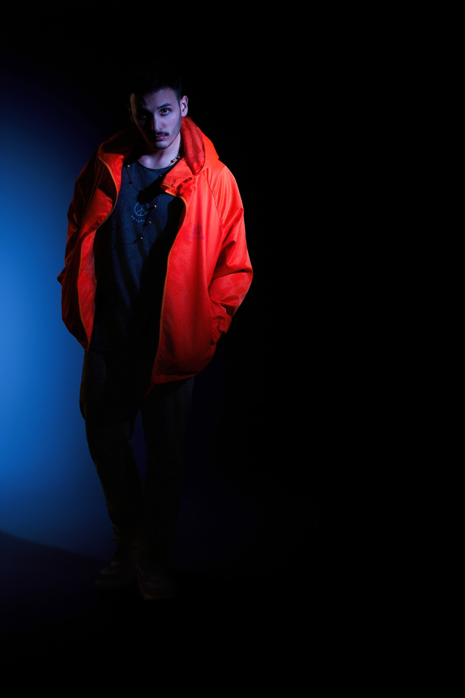
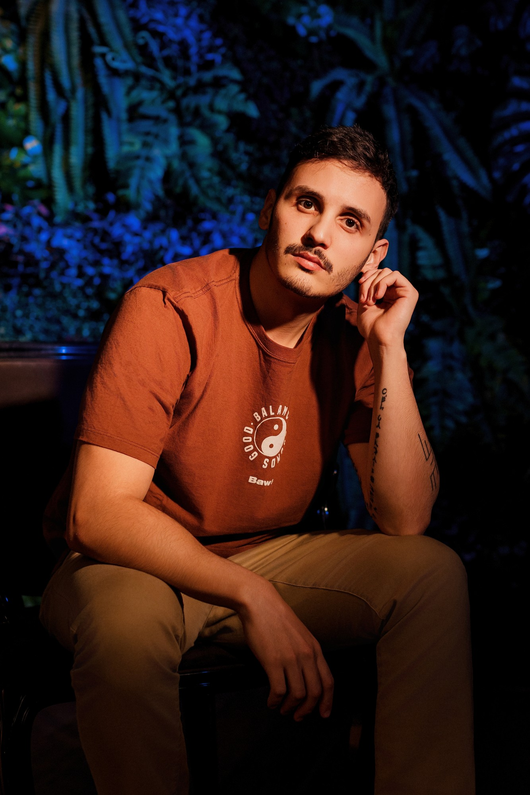
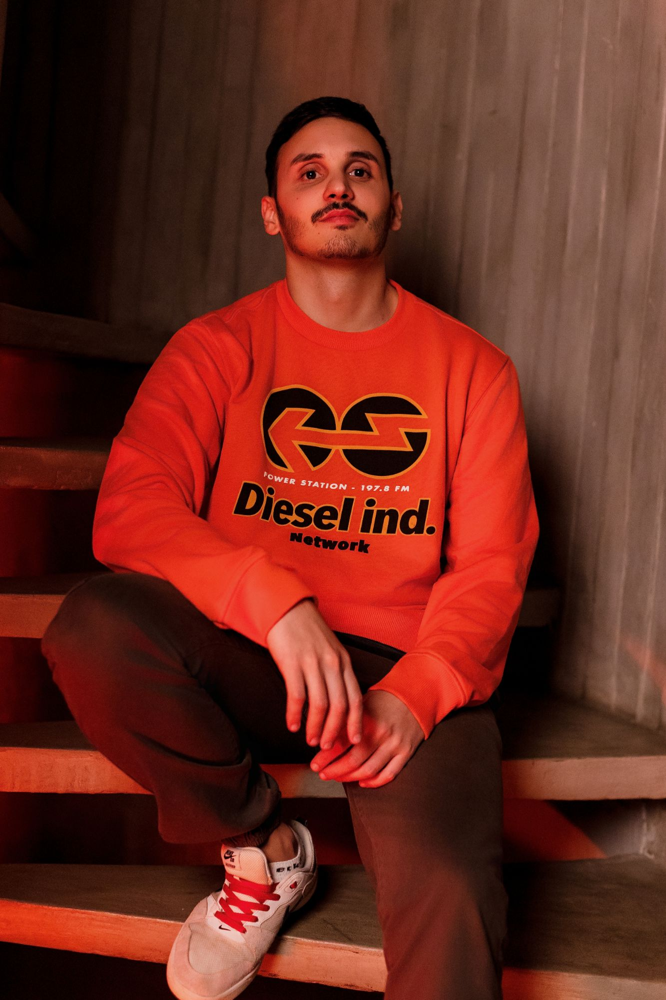

Passando por diferentes vertentes da House Music e indo até clássicos dos anos 2000 e da música brasileira, Ayrton Siqueira a.k.a. Totsik entrega sempre apresentações com muita conexão com a pista.
São 10 anos comandando as mais diversas pistas: label parties, festas universitárias, aniversários, casamentos e eventos corporativos.
Pode esperar muito groove, nostalgia, surpresas e uma energia sem igual.



Campo de Marte · Anhembi · Crema Club · Club A · Le Club · Via Matarazzo · Club 33 · Nos Trilhos · Coffeeshop · NossaCasa
Barbarosa · Major Bar · Sala Bar · Backroom · Varal · Valentina · Auê · Rabo de Galo · Sky.na · Borda · Casa de Fulana
São Paulo · São Bernardo do Campo · Santos · Sorocaba · Vinhedo · Maceió (AL)
Sala Club · Sens Music Collective · Hash Groove · Festa Legall
Clubs, bares, eventos particulares ou corporativos